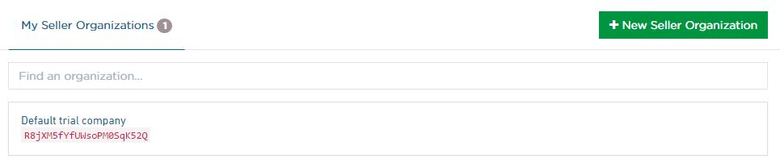
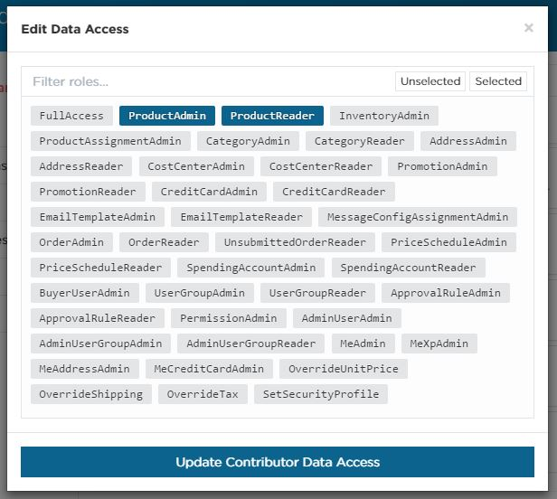
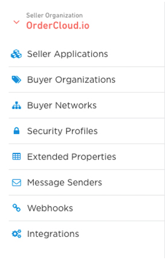
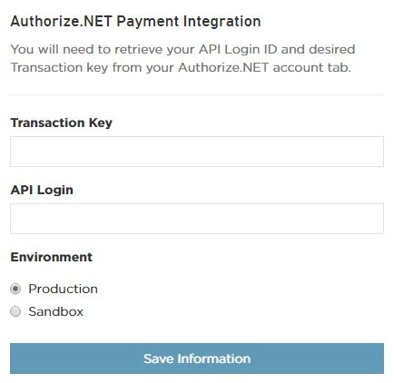

__Overview
The OrderCloud.io Dashboard is the central hub for managing your OrderCloud
organizations and applications. This guide is meant to help you understand all
the tools available to you and your team while creating and maintaining
amazing B2B eCommerce solutions.
You will not be able to view the Dashboard if you haven't created an account.
If you haven't already, register for OrderCloud.io to access your free
account.
__Getting to the Dashboard
Upon logging in for the first time you will be taken to your account profile
page. Here you can edit your profile information and change your password.
Below your profile information you should see a "My Seller Organizations"
tab with a new seller organization called "Default trial company".

Clicking on a seller in this list or creating a new organization will redirect
you to what we call the OrderCloud.io Dashboard. Once you're in the
dashboard you are now working within the context of a single seller
organization.
__Seller Organization Settings
This is the page you will land on when opening any organization. The view has
two tabs: Seller Options and Contributors.
__Seller Options
The organization owner has exclusive permission to change the seller options
including updating the organization name, transferring the org to a
contributing developer, or deleting the seller entirely. If you're a
contributor, you can choose to leave the organization from this view.
__Contributors
Most B2B eCommerce projects require some level of collaboration. By sharing
your organization with other team members on OrderCloud you can all work
together on a single seller. Once a new contributor is added you can refine
their access to your organization by adjusting their permissions & data
access.
Contributor Permissions

Each permission controls whether or not a given contributor can access
specific dashboard functionality for your seller organization. For example,
you may have one contributor that is responsible for creating webhooks and
integrations and another who is responsible for setting up security profiles
for your end users.
Contributor Data Access

Data Access gives you control over which roles (if any) a given contributor
can request when using the OrderCloud API with this seller organization or any
of it's buyer organizations. A contributor with FullAccess here will have
total control over any of the data under the seller organization. It is
strongly recommended you use a combination of the granular roles that enable
each developer to accomplish their project tasks to avoid unwanted or
unexpected changes to your organization's data. OrderCloud roles are covered
in-depth later in this guide.
__Dashboard Features

The left-hand menu is where you can access each of the dashboard features
available to you for a given seller organization. Some features such as
Message Senders or Integrations will be hidden from this menu if you do not
have permission to access them.
Beyond these basic navigation items, there is a "Switch Organization" button
which allows you to quickly change your active seller organization.
__Buyer Organizations
The OrderCloud Dashboard provides a simple user interface for managing a
seller's buyer organizations. Each buyer organization has a Name and ID
that are used for interacting with the buyer via the API. A buyer with a
status of "inactive" is blocked from submitting orders. The Buyer API allows
full control of buyer organizations as well; however, managing the API Clients
of each organization is restricted to the OrderCloud Dashboard.
__Applications
Seller and Buyer Organizations each have their own set of applications.
Clicking "Seller Applications" in the left nav will give you a list of
applications that can be used by your organization's Admin Users. Buyer
Applications are visible under each respective Buyer Organization and can be
accessed by the Users under that buyer.
Application Settings
Opening an individual application will bring you to the Settings tab for
that application. Seller Organization owners and contributors with permission
to administer applications can update application information in this tab and
activate/deactivate the application. Within this tab you’ll find the
following:
|
Client ID
|
The unique identifier of an application. This field is read-only and used in
all OAuth2.0 workflows. It is a general rule that one front-end application be
associated with a single Client ID or "application".
|
|
Client Secret
|
This is an optional elevated level of security. It allows you to require an
additional keyphrase in all authentication requests. It is also used as part
of the Client Credentials Grant Type workflow for anonymous authentication or
back office systems.
|
|
Back Office User
(Seller Applications Only)
|
This is for automated systems using a Client Credentials Grant Type. After
following this OAuth2.0 workflow you will appear as this user.
|
|
Anonymous Template User
(Buyer Applications Only)
|
This enables anonymous shopping and/or registration on buyer applications. Use
the Client Credentials Grant Type you can authenticate without a password and
you will appear as a temporary user that has the same assignment based
relationships and security as the anonymous template user.
|
|
Access Token Duration
|
How long (in minutes) an access token will remain valid (max: 600m)
|
|
Refresh Token Duration
|
How long (in minutes) you are able to obtain a new Access Token (max: 43200m)
|
Active Webhooks
The "webhooks" tab is visible to owners and contributors with permission to
administer webhooks. This is where you will enable / disable webhooks for a
given application. Create a webhook once using the Webhooks feature and apply
it to one or many applications using this workflow.
Active Integrations
The application "integrations" tab works a lot like the "webhooks" tab.
Only Seller Organization owners and contributors with permission to administer
integrations will see it. By clicking "add" you can choose from any of your
configured integration services and apply it to said application.
__Security Profiles
This feature is available to organization owners and contributors with
permission to administer security. Security Profiles are groupings of roles
that can be later assigned to admin and buyer users using the Security
Profiles API.
The granular nature of OrderCloud roles enables you to control exactly which
API endpoints and/or data each user can access within your organization
(similar to your contributor's data access!). In general, an Admin role
allows read and write access of a given resource while a Reader role
allows only read access.

It is strongly discouraged and considered a security risk to give your
admin or buyer users the FullAccess role. While it may be convenient to use
in the early stages of development - it is always better to give end users
a combination of more granular roles that align to the actions they will be
taking in the application.
If you can't seem to find the role that's right for your users, please
contact us with your request and if deemed
appropriate by our development team, the role will be added to the API.
__Extended Properties
The Extended Properties (XP) feature was created to improve the performance of
filtered API queries. Instead of automatically indexing any new XP, we ask
developers to define which properties they would like to be indexed
beforehand. Once an XP key is added to this list, relevant Extended Properties
created from that point on will be available for filtering.
__Webhooks
Webhooks enable user-defined HTTP callbacks for all writeable endpoints in the
OrderCloud API. They can be used to perform follow up tasks such as updating
an external CRM system when a user updates their profile, or send an email
through a 3rd party system when an order is submitted. Webhooks are
fundamentally designed to provide maximum flexibility within the integrated
solution.
Owners and contributors with permission to administer webhooks can access this
feature. OrderCloud requires standard webhook information:
|
Payload URL
|
The URL OrderCloud will send data to.
|
|
Secret
|
OrderCloud will encrypt this secret and pass it through the request headers.
|
|
Trigger Events
|
The OrderCloud API endpoints that will trigger the webhook event. Webhooks can
only be triggered by endpoints that write to the database (`POST`/`PUT`/
`PATCH`/`DELETE`). The request body sent to the OrderCloud endpoint (if any)
will be passed along to the webhooks that use it.
|
Beyond this basic info, we've enhanced our webhooks with some other, more
nuanced options:
|
Elevated Roles
|
Normally, OrderCloud will pass along a token that has the same roles as the
original request's access token. Elevated roles are any roles that you need
for your webhook that the original request's access token doesn't have
(usually for subsequent requests that access information the originating user
doesn't have permission to view).
|
__Integrations
Organization owners and contributors with permission to administer
integrations can access this feature. Choose a service from the "Available
Services" tab and click "Add".

You will be prompted to fill out the information required for OrderCloud to
communicate with the new account.

Any applications that have the configured integration activated will have
access to use it.
__Conclusion
In summary, everything you need to create and maintain a robust API-driven
application is at your fingertips in the OrderCloud Dashboard. We're always
looking for ways to improve the experience, so any feedback or suggestions you
have as a user of the platform are greatly appreciated.